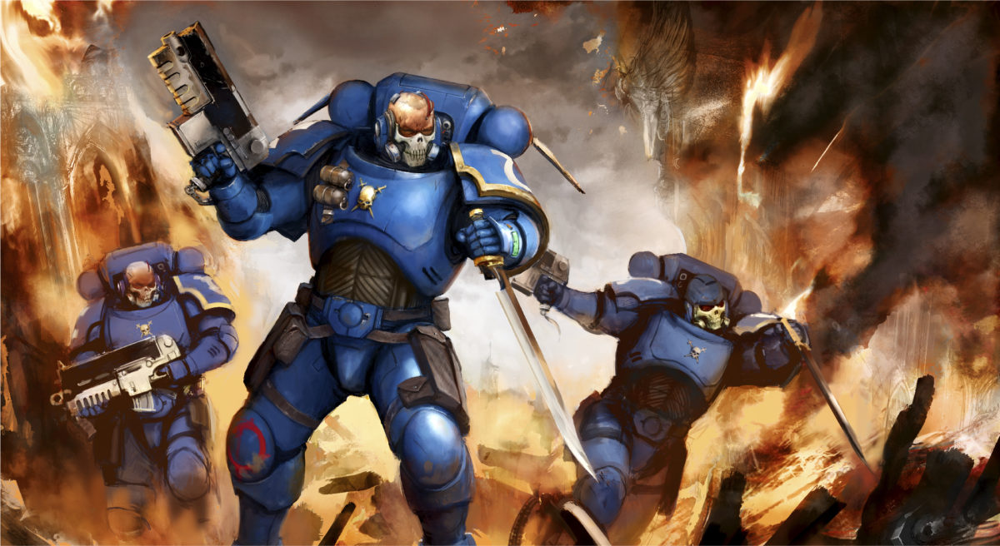

Painting Warhammer Miniatures!

Warhammer is divided into 2 categories:
- Warhammer 40K
Or
- Warhammer Age of Sigmar
Today I'm going to focus on Age of Sigmar
Age of Sigmar is set in the Mortal Realms, a system of eight interconnected planes spawned from the winds of magic. Within these eight realms,
the occupants fight for reasons different from each of the realms themselves. Such as the Orruks, who prefer to fight for fun, whereas the Fyreslayers
opt for finding treasure. Regardless of the reasons, there are none in the mortal realms that are free from the endless cycle of war and carnage.
There are currently 24 factions and armies in Age of Sigmar
I'm going to show you a few of my favorites